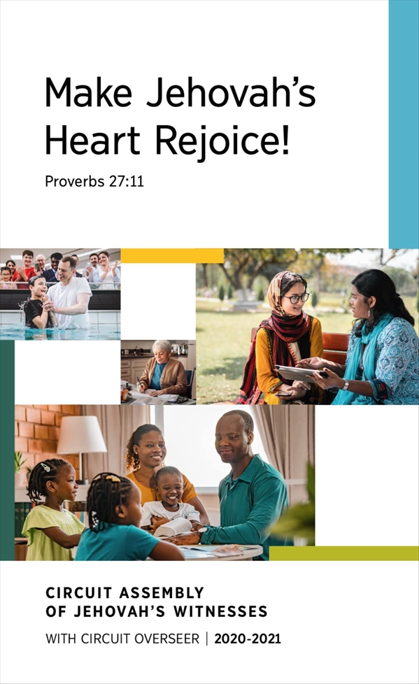

<div id="f1" class="north_center">
<figure>

</figure>
</div>
<header>
<h1 class="coverTtl" id="p1" data-pid="1"><span id="page1" class="pageNum" data-no="1" data-before-text="1"></span><strong>2020-2021 Circuit Assembly Program​—With Circuit Overseer</strong></h1>
</header>
<p id="p2" data-pid="2" class="themeScrp"><strong>Make Jehovah’s Heart Rejoice!​—</strong><a href="jwpub://b/NWTR/20:27:11-20:27:11" data-bid="1-1" class="b"><strong>Proverbs 27:11</strong></a></p>
